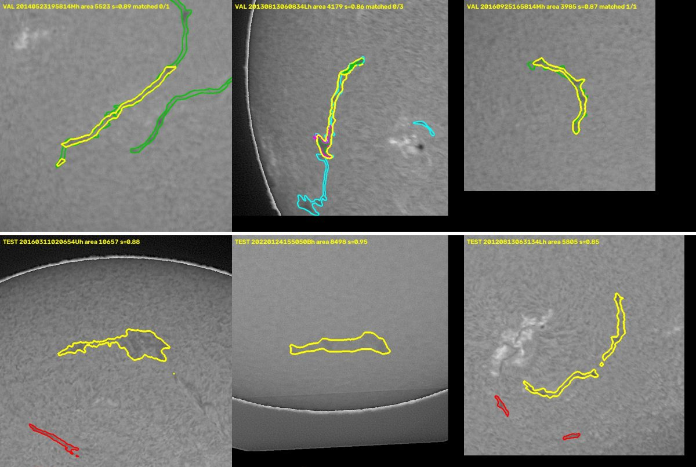

Bottom line. The best submission is the exp169 rule: validation PQ 0.489, public 0.41. No submission since the best model (exp139, public 0.41) has moved the public score. Every candidate left is expected to move validation by less than the measurement noise. So I recommend the boring answer, with no new training and $0 of the RunPod credit:
Reaching your goal of public >0.46 would need validation of about 0.53. I estimate the chance of that by 15 November at under 2%. The organizers say they will clean leak-driven scores (the 0.55 cluster) off the board after the deadline, and that they take 0.41 "very seriously" [F 743958, F 724503].
Words used. A true positive (TP) is a predicted filament that overlaps an annotated one with IoU (intersection over union) above 0.5. Unmatched predictions are false positives (FP), and unmatched annotations are false negatives (FN). PQ = SQ × RQ: SQ is the average IoU of the matches (boundary quality), and RQ = TP / (TP + ½FP + ½FN) (finding the right objects). Every annotator's version of a photo is scored separately, and the counts are pooled. Validation is the 106 photographs (180 annotation records) held out from training. The public board scores about half of the 180 test photos and prints two decimals. Cross-validation (CV) picks settings on one half of the validation photos and scores them on the other half. Sources: AE / LA = line in docs/ACTIVE_EXPERIMENT.md / docs/leaderboard-analysis.md on main (commit 54dcd9f). K = Kaggle kernel cosmicwitness/sol-…. F = forum topic id. P = competition page. A = file in final_decision/analysis/. All are itemised in ledger.md and rules_and_forum.md.
About 200 experiments fall into three phases [ledger.md]. The YOLO phase (exp001–exp138) ended at public 0.39. Its post-processing ideas were tried exhaustively, and only 1-pixel erosion and voting across flipped and rotated copies helped [LA 573; AE 253–287]. In the Mask2Former phase, exp139 trained Mask2Former with a Swin-S backbone at native 2048-pixel resolution for 50 epochs on a rented H100, for about $4.8. Epoch 40 reached validation PQ 0.4705 (SQ 0.686, RQ 0.686) and public 0.41 [AE 3374–3419]. The Kaggle-only phase (exp146–exp198, 22 Sep–6 Oct) is in no GitHub branch. I recovered it read-only from the account's kernels [ledger.md §3]. It built candidate caches and tuned a voting rule: the exp169 rule adds 10 extra views of each photo plus two YOLO models' detections as votes. That rule scores 0.4889 on validation (0.4871 under CV) and 0.41 public [K exp168, K exp169]. That phase also retrained Mask2Former nine times on free T4 GPUs: longer schedules, Swin-B, focal loss, copy-paste, quality heads and IoU targets. All nine landed at 0.452–0.470, none above exp139 [K exp173a/b, 187, 190b, 197].
| Family | Best result (validation PQ unless stated) | Verdict | Source |
|---|---|---|---|
| Semantic U-Nets | 0.296; public 0.26–0.28 | dropped early | RESULTS.md on exp/001; LA 226 |
| YOLO instance models | YOLOv8l with flip/rotation voting 0.4668; public 0.39 | superseded; reused as votes | AE 1411, 1499 |
| Mask2Former Swin-S, native 2048 (exp139) | 0.4705; public 0.41; the same model at 1024 px only 0.342 | best single model | AE 3401, 3418; K exp146 |
| Retrains (longer, Swin-B, focal, copy-paste, quality head, IoU targets) | 0.452–0.470 (Swin-B epoch 32: 0.4698) | no gain | K exp173a/b, 187, 190b, 197 |
| Fine-tune and full-data runs | 0.464–0.466; the exp142 full-data run crashed, never rerun | no gain / unrun | K exp150; AE 3462 |
| Rules: thresholds, mask threshold, erosion, area, learned combiners | geometric view score +0.004; area +0.0005; mask threshold and erosion lose; combiners lose | exhausted | K exp149 |
| Votes: views, YOLO, YOLO masks, joint CV tuning (exp154–169) | 0.4705 → 0.4889; public still 0.41 | current best rule | K exp158, 159, 166, 168, 169 |
| More voters: semantic nets, snapshots, 4 more YOLOs, rotations, 3 weaker Mask2Formers, RF-DETR | all ≤ exp169 under CV | negative | K exp165, 167, 171, 172, 185, 195a/b |
| Unlabelled frames and pseudo-labels (Helioviewer) | exp139 scores 0.08–0.13 on those frames vs 0.46–0.48 on the same scenes as competition JPEGs | domain gap; closed | K exp182, 182b |
Validation versus leaderboard. For YOLO models the public score was validation minus 0.067–0.078 [CLAUDE.md, line 180]. For Mask2Former, validation 0.4705 and 0.4889 both print 0.41 [submission list]. Reusable assets: the exp139 weights, the T4 checkpoints including Swin-B epoch 32, full validation and test candidate caches, Swin-B validation caches (exp198, never scored), and both YOLO models' prediction pools [ledger.md §5]. There are no out-of-fold Mask2Former predictions.
I re-ran the scoring on existing predictions, on CPU only. Each check below first reproduces the recorded number exactly (exp139 0.4705249990, exp169 0.4889485999) before measuring anything [A diagnose_exp139.py, veto_check.py].
(a) Where the error is. Neither factor dominates: SQ 0.686 and RQ 0.686 for exp139, SQ 0.691 and RQ 0.708 for exp169. Of exp139's 444 misses, 245 touch no prediction, 129 are near-misses (a prediction with the wrong extent, IoU 0.3–0.5), and 70 overlap less. Merges and splits are rare: 37 of 1,325 annotations overlap two or more predictions, and 40 of 1,242 predictions overlap two or more annotations [A outputs/diagnose_exp139.json]. So there is no single broken stage to fix. That matches the record: about 35 boundary refiners and near-miss repairs failed [LA 994–1490; AE 681–3167].
(b) The labels disagree, and the model already predicts a held-out annotator better than other annotators do. Two annotators of the same photo agree at PQ 0.347 [AE 3549]. On the 27 validation photos with three annotators, I held each annotator out in turn and used the other two as a "committee". Every committee variant scored 0.30–0.33 against the held-out annotator, while exp139 scored 0.454 on the same 81 records [A committee_ceiling.py; LA 486–497 finds the same 0.329 on all 151 such photos]. On photos with several annotators, 73% of the misses were drawn by that annotator alone, and 51% of the false positives match another annotator's filament [A outputs/diagnose_exp139.json]. Much of the remaining error depends on whose labels are scored. That is a measurement, not a proof that nothing can improve.
(c) More data or training will not move it. Training on the validation photos raised the score on those same photos by only +0.002: 0.4660 in-sample against 0.4640 held out [K exp150 event logs]. An all-data model scored 0.457 in-sample on 12 of its own training photos [K exp173b]. A model that cannot fit its own training photos better is not short of data. That rules out a full-data retrain, pseudo-labels and copied-label frames as primary bets. It also fits why longer schedules and a bigger backbone gave nothing.
(d) Noise is as large as the gains still on offer. A photo-level bootstrap gives a standard deviation of 0.0105 for validation PQ and 0.011 for a 90-photo public half [A outputs/diagnose_exp139.json]. Four T4 retrains of the Swin-S recipe landed at 0.463–0.468 [K exp173a, 187, 190b, 197]. Checkpoints of one run differ by up to 0.008 (exp139 epoch 40: 0.4705; epoch 50: 0.4621) [AE 3505]. The validation gain of +0.018 from exp139 to exp169 left the public score at 0.41, so the public gain was under 0.01. The 106 validation photos have guided over 100 decisions, so small gains measured on them are likely optimistic. Only effects with a clear mechanism, checked before shipping, are worth testing now.
(e) Leakage does not explain the validation-to-leaderboard gap. Training and validation were split by photograph and stratified by site [shared/data_split.py]. Filaments persist for days, so 29% of validation photos have a training photo within 24 hours. The test photos are just as close (29%; median gap 2.0 days against 1.7) [A temporal_train_test.py]. So the temporal leak inflates validation and test alike, and the earlier explanation for the gap does not hold [LA 545]. Neither does the number of annotators per photo (PQ 0.469 / 0.500 / 0.454 for 1 / 2 / 3 annotators). I could not find the cause.
(f) Resolution and preprocessing are handled. Native resolution matters: exp139 scores 0.342 at 1024 px [K exp146]. Shift, scale and tile views change little [K exp149, 157], and train and test use the same JPEGs. Two assets are unspent: the Swin-B caches [K exp198], and the rulings that allow copying labels onto neighbouring GONG frames and using spines as supervision [F 748045, F 736543]. Their cost and risk are in section 5.
(g) The best rule deletes visible filaments. In exp169's score, YOLO's two votes carry 8 of 19 shares. An instance that neither YOLO model detects survives only if Mask2Former scores it at about 0.997 or more in all 11 views. On test, exp169 drops 101 of exp139's 1,192 instances, 9 of them larger than 3,000 px [A outputs/removed_instances.json]. The six largest, inspected at native resolution, are all clearly visible filaments (Figure 1). On validation the large drops are real filaments too, but annotators drew them with a different extent, so PQ counts them as errors. The cause is low YOLO confidence, not YOLO splitting them into pieces: 57 of 69 validation drops have a single YOLO match at IoU above 0.5 [A outputs/veto_mechanism.json]. The organizers want all real filaments detected and inspect masks directly [F 735256, F 724503].
How I ranked. The public board cannot see differences under 0.01, so a candidate may replace the validated exp169 only if its effect can be measured on held-out data before shipping. That rules out a full-data retrain (nothing is left to check it on), and anything needing new training: retrain noise of 0.003–0.008 hides the effect. Among the checkable candidates, a second strong voter is the only one with a plausible positive PQ effect. Variance reduction is also the lever that point (d) leaves.
Idea. Today exp169's vote has one Mask2Former and two YOLO models. Swin-B epoch 32 [K exp190b, validation 0.4698] is the first additional Mask2Former about as strong as exp139 (0.4705), with a different backbone and seed. Its validation predictions are already cached [K exp198a–e, 106 photos].
What is different from earlier failures. exp185 and exp195a added three weaker Mask2Formers (0.452–0.464) as voters, and PQ fell as their weight rose: 0.4889, 0.4878, 0.4871 and 0.4839 at weights 0, 1, 2 and 4 [K exp195a]. A weak voter mostly adds its own errors. A voter as strong as the anchor model is the untested case. exp195 also searched 72 rule settings, so its cross-validation lost about 0.004 to the search alone. This test fixes all of exp169's settings and varies only the new voter's weight (0, 1, 2 or 4, with and without its masks in the pixel vote).
Exactly what changes. There is one new script, built from exp195's vote code [recovered_code/sol-exp195b…/votes.py]. It merges the five Swin-B cache shards and restricts the grid. The model, YOLO pools, views, threshold search and the two CV folds stay exactly as in exp169. Commands are in HANDOFF.md.
Pilot (CPU, existing caches, about 2 hours, $0). Three checks run in order, and each must pass before the next counts. (1) Parity: weight 0 reproduces exp169 exactly (0.48894859995, TP/FP/FN 892/304/433). (2) Swin-B alone scores 0.4698 ± 0.005. (3) The decision.
Kill criterion. On the fixed 106-photo validation split, using exp168's two folds (seed 2026), the restricted grid's cross-validated PQ must beat exp169's 0.4889 by at least +0.002, and the best in-sample row must give the new voter weight > 0. Otherwise stop and go to the fallback. Why +0.002: it is the bar exp169 itself was adopted on (its gain was 0.0023) [K exp169 report], so the comparison is like for like. Rule-to-rule differences on these photos carry about 0.003 of paired noise [K exp168: 95% interval −0.0021 to +0.0086], so a lower bar would mostly adopt noise.
Full run, only if it passes (one free T4 session, about 1.5 h). Cache Swin-B on the 180 test photos and build the submission with exp169's builder plus the new voter. Fatal checks: with weight 0 the output is byte-identical to exp169's submitted file (SHA256 CC15EA41…), there are no overlapping masks, and a review sheet against exp169 is looked at. Then apply the fallback's guard and submit once.
Honest odds. I put the chance of passing at about 15%. The prior is exp195a's falling weights, and the only reason for hope is that this voter is stronger. If it passes, I expect +0.001 to +0.002 on the private half: real, but invisible at two decimals. It also costs pipeline weight: a 432 MB checkpoint to store in the repo, and roughly double the inference time.
Rule. After the final rule paints its instances, add back every exp139 instance of at least 3,000 px (score at least 0.85) that the vote removed, into unclaimed pixels only. The cut is set by what a judge sees, not tuned for PQ. Acceptance: validation PQ must stay within 0.001 of the rule without the guard. For exp169 I measured 0.48835 against 0.48895 (−0.0006: +1 TP, +5 FP, −1 FN) [A veto_check.py, outputs/veto_check.json]. On test, about 9 filaments come back, and their review sheet must show filament shapes, not limb arcs or sunspots. Its PQ effect is about zero either way. Its value is in the masks the judges inspect.

analysis/review/.| Candidate | Why not now | Checkable before shipping? |
|---|---|---|
| Full-data retrain of exp139 (exp142 redo, about $6 of H100) | Point (c): in-sample ≈ held-out, so 18% more photos buys little. exp169's thresholds were tuned to epoch 40's scores and would be applied blind. Retrain spread (0.003–0.008) is as large as the hoped gain. The chance of beating exp169 is close to a coin flip. | No (nothing held out) |
| RF-DETR-Seg-L as a third model family | On a T4 it ran 75 minutes per epoch and reached 0.397 after 7 epochs [K exp194b]. A proper run would cost about $15–30 of H100, more than the budget. Its votes lost under CV [K exp195b]. | Yes, but over budget |
| Copy labels onto neighbouring GONG frames, or pseudo-label unlabelled frames (allowed: F 748045) | Point (c) says more of the same scenes adds little. Frames from another source scored 0.08–0.13 [K exp182], and the NSO archive blocks bulk downloads [F 749225; K exp148]. Too slow to finish in 17 days. | Only after full training |
| Spine or magnetogram auxiliary losses (allowed: F 736543, F 743521) | Each needs a full retrain, and the effect would sit below the 0.003–0.008 retrain noise. | No |
| More rule tuning on validation (extent repair, re-weighting YOLO) | Point (d): validation is used up. Fragment-aware YOLO support was checked and does not apply (point g). | Yes, but on worn-out data |
Compute: about 3 CPU-hours and 1.5 free T4 hours, and $0 of the $12 RunPod credit. Keep the credit in reserve for a reproducibility rehearsal if the Kaggle quota runs out. Submissions: one or two of the 5 per day. Timeline: pilot and decision by about 1 November; full run or guarded exp169 submitted by about 3 November. That leaves 12 days for the repository: commit the recovered exp147–exp169 code (verified against each kernel's checksums, 52 kernels, 0 mismatches), the weights (Git LFS; exp139 alone is 276 MB), the notebook, requirements.txt, a clean-clone rehearsal and the 4-page report [P Final Submission; F 724503]. Final selection: the rules allow up to two final submissions [P rules §2.2.b], though you said one. If two are allowed, select the winner of sections 3–4 plus exp169 as submitted.
exp/145-host-evaluation is the best reference, and our scorer matches it.Read fully: README, CLAUDE.md, the prompt, and docs/ (ACTIVE_EXPERIMENT.md 3,567 lines, leaderboard-analysis.md 2,072 lines, strategy, preregistration, architecture review, host guidance, quality reviews). Also the book's ledger and Mask2Former chapters, the paper, all exp139 and shared code, the exp033 scorer, the host notebook, and the history branch's handoff files. From Kaggle, read-only: logs, outputs and decoded code of all 52 kernels exp146–exp198, 34 submissions, the leaderboard, all competition pages and all 43 forum topics. Skimmed: all 129 branch tips (file lists, diffs against main, commit messages), module docstrings of exp059–exp134, the testing-manual PDF, and the book's narrative chapters. Skipped: weights, datasets and images, except the review crops made here; base64 copies of code already read; most unit tests; credential fields. New analyses (CPU, parity-checked) are in final_decision/analysis/; the full ledger is in ledger.md.